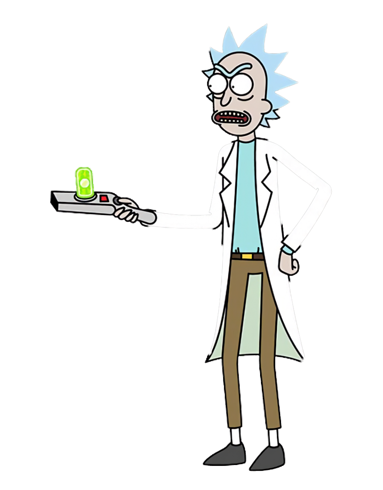

Rick and Morty est une série animée créée par Justin Roiland et Dan Harmon. Elle a été inspirée par les aventures de l'oncle Rick et de son petit-neveu Morty, deux personnages qui parcourent l'univers en quête de nouvelles expériences. La série a été lancée en 2013 et est rapidement devenue populaire en raison de son humour absurde, de ses personnages complexes et de ses références à la science-fiction.
Comédiens
La saison 1 de Rick et Morty s'ouvre avec Rick qui vient de se sortir d'une situation très difficile et qui est plus déterminé que jamais à reprendre le contrôle de sa vie. Pendant ce temps, Morty est déterminé à faire la paix avec Summer après un affrontement émotionnel. Ensemble, ils partent en mission à travers l'espace et rencontrent de nombreux personnages étranges et fascinants. Ils rencontrent un roi qui les oblige à résoudre un mystère effrayant, rencontrent une race d'aliens ennuyeux qui veulent asservir l'univers, et rencontrent un réalité alternatif où les réalisations de Rick ont des conséquences dévastatrices. La saison est parsemée de moments de tension, de moments de révélation et de moments de comédie absurde. La saison se termine avec Rick et Morty face à une menace apocalyptique qui les oblige à travailler ensemble pour sauver la Terre. Ils doivent faire face à leurs peurs les plus profondes et se battre pour leur famille. À la fin, Rick est confronté à la réalité de ses actions et se demande s'il peut vraiment changer. La saison se termine sur une note ouverte, laissant les fans se demander ce qui se passera dans la prochaine saison.